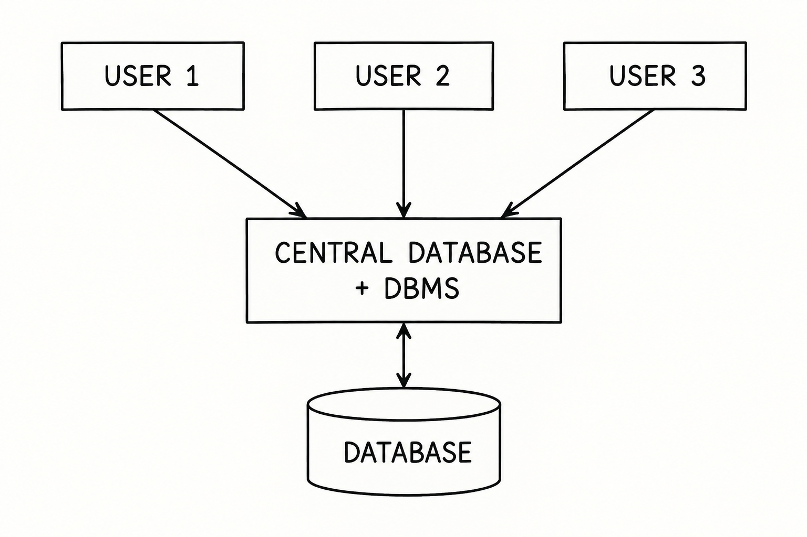
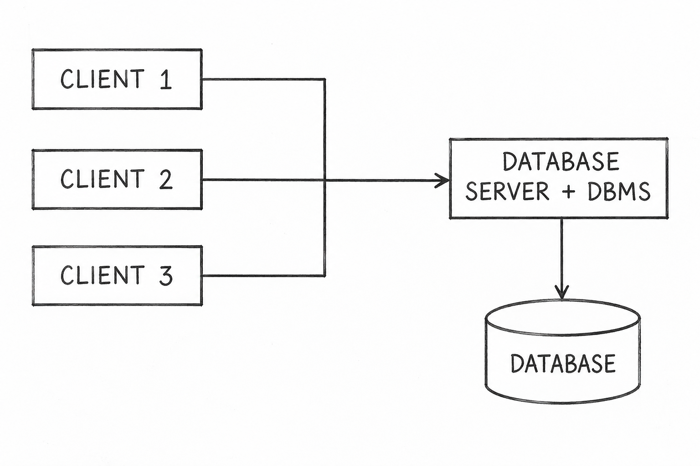
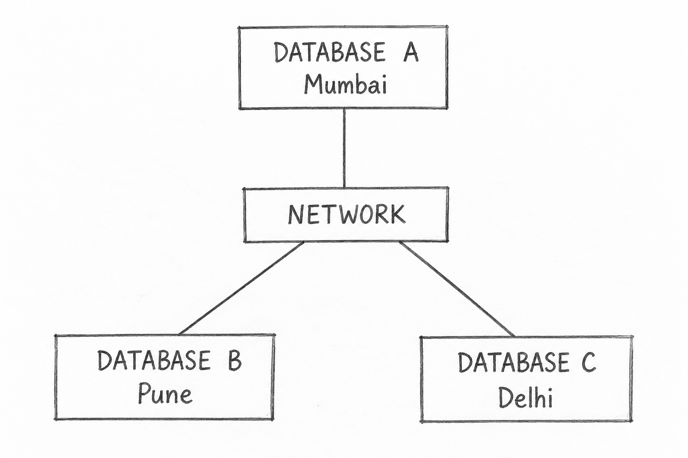

Q7. Describe the Database Architecture (Client-Server, Centralized, Distributed) with a Suitable Diagram.
Database Architecture describes how the database, DBMS, users, and applications are organized and connected.
The three common types are Centralized, Client-Server, and Distributed Database Architecture.
1. Centralized Database Architecture
In Centralized Database Architecture, the database and DBMS are located at one central system. All users access the same central database.

Example: A college stores all student records in one central database.
Main Feature: Data is stored and managed at one central location.
2. Client-Server Architecture
In Client-Server Architecture, clients send requests to a database server. The server processes database requests, retrieves or updates the required data, and sends the results back to the clients.

Example: A college marks portal where students use an application to request their marks from the database server.
Main Feature: Clients handle user interaction, while the server manages the database.
3. Distributed Database Architecture
In Distributed Database Architecture, data is stored at multiple locations connected through a network. These locations work together as a single database system.

Example: A bank maintains databases at different branches connected through a network.
Main Feature: Data is stored at different locations but can be accessed as part of one database system.